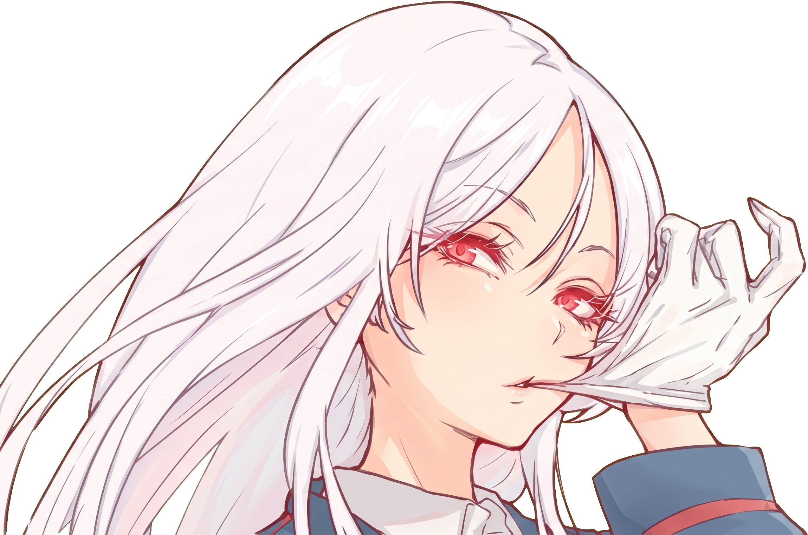

Aku Wibian J., atau Aozora Willy di dunia online — pelajar PPLG yang senang mengubah ide jadi antarmuka digital. Aku suka desain minimalis, detail yang rapi, dan teknologi yang terasa punya karakter. Masih belajar, masih bereksperimen, tapi selalu pengin bikin sesuatu yang nyata.
IDEAS INTO INTERFACES
Cirra lus avica · freedom above everything
DESIGN WITH INTENT ✳ BUILD WITH CURIOSITY ✳ CIRRA LUS AVICA ✳
DESIGN WITH INTENT ✳ BUILD WITH CURIOSITY ✳ CIRRA LUS AVICA ✳
DESIGN WITH INTENT ✳ BUILD WITH CURIOSITY ✳ CIRRA LUS AVICA ✳
DESIGN WITH INTENT ✳ BUILD WITH CURIOSITY ✳ CIRRA LUS AVICA ✳
私について

01 / Tentang
自分
Aku suka hal yang simpel, tapi tetap punya cerita.
XI/2PPLG · SMK Brantas
Fokusku ada di persimpangan desain dan kode: memahami kebutuhan, merapikan pengalaman pengguna, lalu mewujudkannya jadi website. Aku terinspirasi oleh estetika Jepang, dunia digital, dan prinsip kebebasan untuk bereksperimen.
01 UI/UX Design02 HTML & CSS03 Frontend04 Figma05 Next.js06 Learn by building